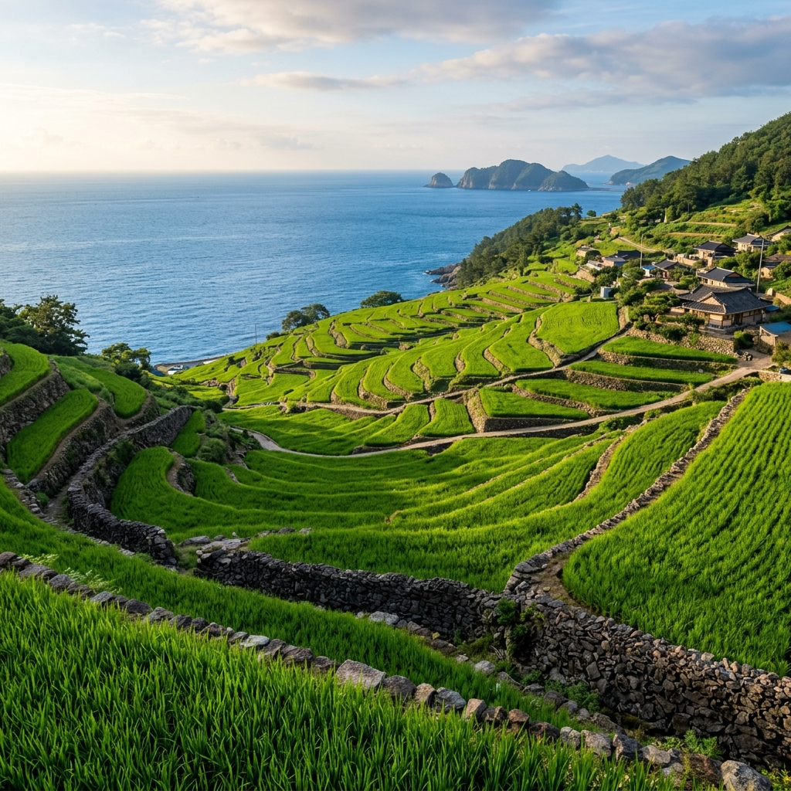
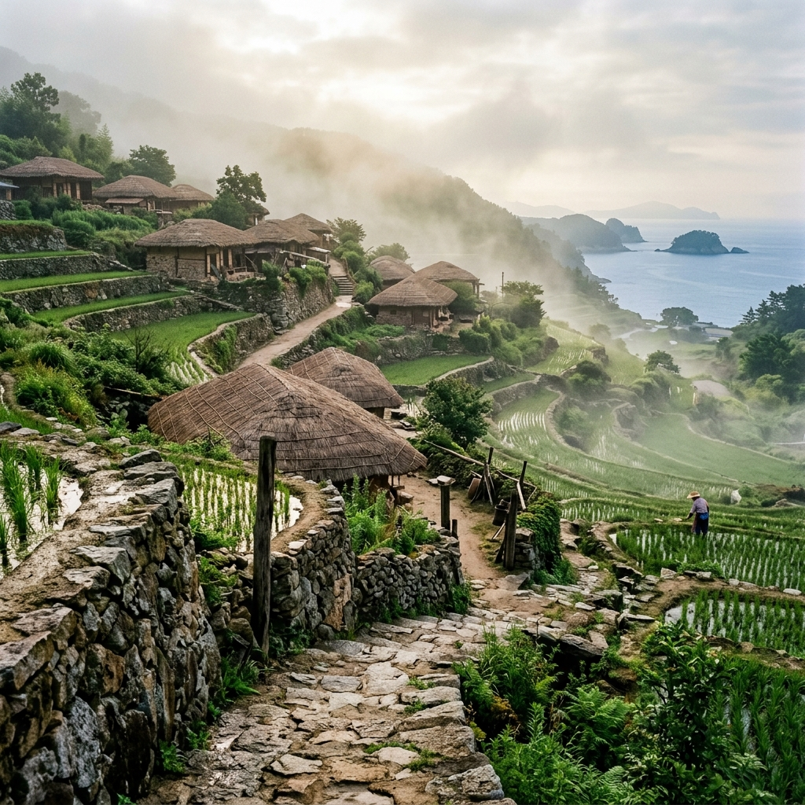
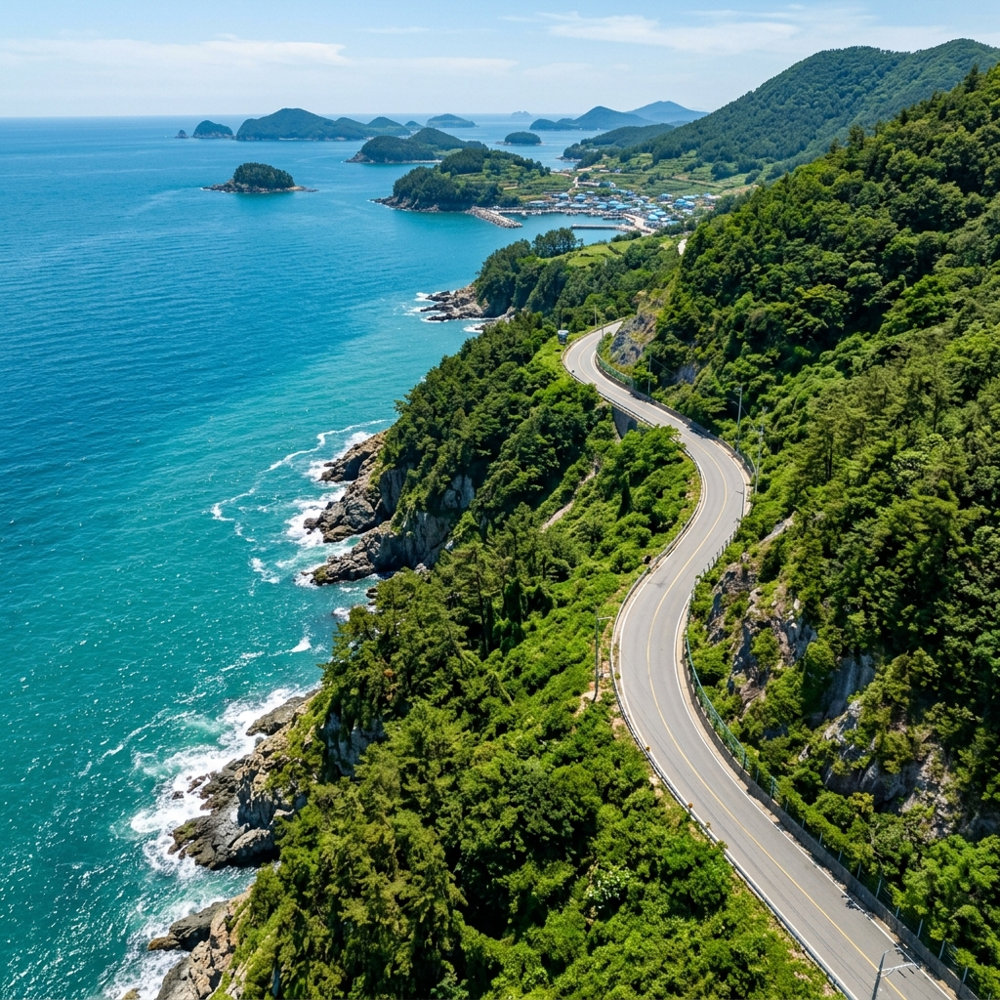

남해군 남면 홍현리, 남해도의 가장 남쪽 해안을 따라 달리다 보면 예상치 못한 곳에 마을이 나타납니다.
산비탈을 따라 층층이 쌓인 논밭이 쪽빛 바다와 맞닿는 장면을 처음 목격했을 때, 잠시 차를 세우고 그냥 서 있을 수밖에 없었습니다.
다랭이마을은 국가중요농업유산 제1호이자 명승 제15호로 지정된 살아 있는 문화유산입니다.
6월의 다랭이마을은 연두와 초록이 교차하는 다랑논과 그 아래 펼쳐지는 남해 바다가 어우러져 국내 어디서도 보기 힘든 풍경을 선사합니다.
실제 방문 후기를 솔직하게 담았습니다.
가천마을로 향하는 진입로를 따라 내려가다 보면 어느 순간 탁 트인 시야가 열립니다.
그 순간 눈에 들어오는 풍경은 설명하기가 쉽지 않습니다.
해발 수백 미터의 산비탈에 빼곡하게 들어찬 108개의 계단식 논이 바다를 향해 흘러내리는 모습은 마치 거대한 초록 계단처럼 보입니다.
6월 초, 막 모내기를 마친 논에는 여린 벼 모종들이 가지런히 심겨 있고, 논과 논 사이의 돌담이 각 층을 구분하며 기하학적인 선을 만들어냅니다.
그 아래로는 진한 쪽빛의 남해 바다가 수평선까지 펼쳐져 있고, 하늘과 바다와 논이 하나의 그림 안에 들어오는 순간은 실제로 눈으로 보기 전까지는 상상하기가 어렵습니다.
다랭이마을이 국내외 여행 사진가들 사이에서 '한국의 무나타라시'로 불리는 이유를 단번에 이해했습니다.
한국에 이런 풍경이 있었구나 하는 감탄이 절로 나왔습니다.
주차장에 차를 세우고 마을 위쪽으로 조금만 올라가면 논 전체를 조망할 수 있는 포인트가 나옵니다.
이 지점에서 바라보는 풍경이 다랭이마을의 정수입니다.

다랭이마을, 즉 가천마을의 역사는 수백 년 전으로 거슬러 올라갑니다.
평지가 거의 없는 해안 절벽 지형에 정착한 선조들은 경사진 산비탈을 일구며 논을 하나씩 만들어나갔습니다.
돌을 쌓아 층을 만들고, 그 위에 흙을 채워 논을 조성하는 작업을 세대를 이어 반복하면서 오늘날의 108개 다랑논이 완성되었습니다.
농림축산식품부는 2013년 이곳을 국가중요농업유산 제1호로 지정했습니다.
경관의 아름다움뿐 아니라 물 관리 기술, 지형에 맞춘 전통 농업 방식, 마을 공동체 문화가 함께 평가받은 결과입니다.
같은 해 문화재청도 명승 제15호로 지정해 이중으로 보호하고 있습니다.
현재도 40여 가구, 70여 명의 주민이 실제로 거주하며 논을 경작하고 있다는 점이 이 마을을 단순한 관광지와 구별 짓게 합니다.
마을 곳곳에 남아 있는 돌담과 당산나무, 그리고 실제로 물이 고인 논밭이 이곳이 살아 있는 공간임을 말없이 증명합니다.
마을 산책 중 만난 어르신이 "예전에는 이 논이 먹고사는 전부였다"고 하신 말씀이 오래 기억에 남습니다.
마을 입구에 들어서면 가장 먼저 눈에 띄는 것이 가천 암수바위입니다.
남근과 여근을 닮은 두 개의 바위로, 마을 주민들이 예로부터 수호신으로 모셔온 민간 신앙의 상징물입니다.
해마다 정월이면 마을 사람들이 모여 이 바위 앞에서 제를 올린다고 합니다.
크기가 크진 않지만, 자세히 들여다보면 왜 이런 이름이 붙었는지 고개가 끄덕여집니다.
바위 옆 안내판을 읽으면 가천마을의 오랜 민간 신앙과 공동체 문화에 대한 이해가 깊어집니다.
마을 뒤편에는 설흘산(481m)이 자리 잡고 있습니다.
정상까지는 왕복 2~3시간의 등산이 필요하지만, 그 노력을 충분히 보상할 만한 조망이 기다리고 있습니다.
정상에 서면 다랭이마을 전체와 남해 바다, 멀리 여수 앞바다까지 한눈에 펼쳐지는 장관을 볼 수 있습니다.
등산이 부담스럽다면 마을 상단부의 전망 포인트까지만 올라가도 충분히 멋진 조망을 즐길 수 있습니다.
15~20분 걷는 거리이고, 특별한 장비 없이 운동화로 오를 수 있습니다.

다랭이마을의 좁은 골목을 천천히 걷다 보면 예상치 못한 것들이 곳곳에서 눈에 들어옵니다.
수백 년 된 돌담이 이어지고, 처마 아래 주렁주렁 매달린 마늘과 고추가 한국 농촌의 정취를 물씬 풍깁니다.
초가지붕이 남아 있는 집 앞을 지나칠 때는 시간이 몇십 년 전으로 돌아간 것 같은 착각이 들기도 합니다.
마을 안쪽으로 들어가면 실제 경작 중인 다랑논 사이를 걸을 수 있는 구간이 열려 있습니다.
논 사이의 좁은 두렁길을 걸으면서 발아래 고인 물에 하늘이 반사되는 장면을 볼 수 있고, 수로를 따라 흐르는 맑은 물소리도 들을 수 있습니다.
개구리 소리와 함께 걷는 이 경험은 도시에서는 좀처럼 맛보기 어려운 것입니다.
마을 입구 근처에는 주민들이 직접 운영하는 작은 가게들이 있습니다.
남해 특산품인 유자차와 마늘 장아찌, 멸치 등을 판매하는 곳들로, 여행 기념품이나 지인 선물 구입에 제격입니다.
논을 바라보며 커피 한 잔 할 수 있는 작은 카페도 운영되고 있었는데, 이 자리에서 바라보는 다랑논 풍경은 제가 이날 찍은 사진 중 가장 마음에 드는 구도였습니다.
다랭이마을 방문 후 차를 몰아 남면 해안도로를 따라 미조항 방향으로 이동했습니다.
이 드라이브 코스가 얼마나 환상적인지는 직접 달려보기 전까지는 알기 어렵습니다.
도로 한쪽은 가파른 절벽이고 반대편은 쪽빛 바다인 좁은 해안 도로를 구불구불 달리는 경험은 국내 어떤 드라이브 코스와 비교해도 밀리지 않습니다.
중간에 차를 세우고 내려서면 발아래 파도가 절벽에 부딪히는 소리가 들리고, 시야가 열리는 지점에서는 다도해의 크고 작은 섬들이 점점이 떠 있는 풍경이 펼쳐집니다.
앵강만을 지나는 구간은 만(灣) 특유의 잔잔한 수면이 드라이브 중 짧은 휴식처가 되어주었습니다.
6월에는 해안가 풀밭에 야생화들이 피어 있어 드라이브 풍경을 더욱 풍성하게 만들어줍니다.
사촌해수욕장에도 잠시 들렀는데, 아직 피서 인파가 몰리기 전이라 한적하고 수질도 매우 맑았습니다.
드라이브 종착점인 미조항에서는 점심을 해결했습니다.
항구 앞 횟집에서 갓 잡은 멸치회와 생선구이를 주문했는데, 싱싱함의 수준이 달랐습니다.
항구 방파제를 걸으면서 낚시하는 현지인들과 정박한 어선들을 바라보는 시간도 여행의 여운을 길게 남겨주었습니다.

다랭이마을에서 반나절을 보낸 뒤 남해의 다른 명소들도 둘러보았습니다.
창선·삼동면 쪽으로 이동하면 바다 위에 설치된 죽방렴을 볼 수 있습니다.
대나무로 만든 V자 어살을 조류가 빠른 해협에 설치해 물고기를 잡는 전통 어법으로, 지금도 실제로 사용 중입니다.
죽방렴으로 잡은 멸치는 그물로 잡는 것과 달리 상처 없이 온전한 상태로 건져 올려져 품질이 최상급으로 꼽힙니다.
지족항 인근 판매장에서 죽방렴 멸치를 구입했는데, 가격은 일반 멸치보다 몇 배 높지만 볶음이나 국물 요리에 써보면 그 차이를 바로 체감할 수 있었습니다.
삼동면에 위치한 물건방조어부림도 꼭 들러야 할 곳입니다.
약 300년 전 마을 사람들이 해풍과 파도로부터 마을을 보호하기 위해 직접 조성한 1.5km 방조림으로, 현재 천연기념물 제150호로 지정되어 있습니다.
숲속 산책로를 걸으면서 바다 내음과 나무 향기를 동시에 맡는 경험은 독특하고 기분 좋은 것입니다.
숲 앞 물건해수욕장도 한적하고 아름다운 곳으로, 발을 담그고 잠시 쉬어 가기에 좋습니다.
남해 여행에서 먹거리를 빠뜨리면 여행의 절반을 놓치는 것이나 다름없습니다.
미조항에서 맛본 멸치회는 가장 인상적인 음식이었습니다.
갓 잡은 싱싱한 멸치를 회로 먹는 방식은 남해 외 다른 지역에서는 쉽게 접하기 어렵습니다.
초고추장에 찍어 깻잎과 함께 먹으면 고소하고 담백한 맛이 일반 생선회와는 또 다른 매력을 보여줍니다.
죽방렴 멸치 볶음은 시장에서 구입해 집에 와서 해먹었는데, 일반 멸치 볶음과는 확연히 다른 풍미와 씹히는 감이 느껴졌습니다.
남해 유자청도 빠질 수 없는 구매 목록입니다.
남해의 온화한 기후에서 자란 유자로 만든 유자청은 향이 진하고 당도가 적절해, 집에서 유자차로 활용하기에 좋습니다.
6월은 햇마늘 수확 시기이기도 해서, 시장에서 신선한 남해 햇마늘을 저렴하게 구입할 수 있었습니다.
마늘 장아찌, 흑마늘 등 마늘 관련 가공품도 다양하게 판매되고 있으니 이것저것 구경하며 구입하는 재미가 있습니다.
다랭이마을 인근의 가정식 백반집도 추천합니다. 마을 주민이 직접 운영하는 소박한 밥집에서 남해 식재료로 차린 반찬들은 투박하지만 정직한 맛이 납니다.
남해 다랭이마을은 남해도 안에 위치해 있어 본토에서 남해대교 또는 창선·삼천포대교를 통해 진입해야 합니다.
자가용 이용 시에는 서울에서 약 4시간 30분~5시간이 걸립니다.
남해고속도로 남해IC 하차 후 남해읍을 거쳐 남면 방향 지방도를 따라 이동하면 됩니다.
내비게이션에 '가천마을 다랭이논 주차장'으로 입력하면 정확하게 안내됩니다.
대중교통 이용 시에는 서울 고속터미널 또는 남부터미널에서 남해 직행버스를 탑승합니다.
남해버스터미널 도착 후 남면행 군내버스로 환승해 가천 정류장에서 하차하면 됩니다.
남해터미널에서 가천까지 군내버스로 약 40분 소요되며, 배차 간격이 1~2시간으로 긴 편이니 출발 전 시간표를 확인하는 것이 중요합니다.
남해도 내 관광지들은 대중교통 접근성이 낮으므로, 남해터미널 인근에서 렌터카를 빌리는 방법도 적극 추천합니다.
마을 주차장은 입구에 무료로 운영되며, 주말 오전 10시 이후에는 만차가 되는 경우가 있으니 일찍 도착하는 것이 좋습니다.
실제 방문 경험을 바탕으로 다랭이마을 방문 전 알아두면 도움이 될 사항들을 정리합니다.
방문 적기는 5월 말~6월과 9~10월입니다.
6월은 초록 논이 가장 풍성하게 펼쳐지는 시기이고, 9~10월은 황금빛 벼이삭이 물드는 시기입니다.
일출 직후인 오전 6~8시에 마을에 도착하면 해무와 아침 햇살이 만들어내는 특별한 풍경을 목격할 수 있고, 사람도 적어 여유롭게 감상할 수 있습니다.
반드시 걷기 편한 운동화를 신고 가세요.
마을 내 골목과 전망 포인트로 오르는 길이 고르지 않아 굽이 있는 신발은 불편합니다.
마을 안에 편의점이 없으므로 음료수와 간식은 진입 전에 미리 준비하는 것이 좋습니다.
6월 남해의 자외선은 상당하므로 선크림과 모자는 필수입니다.
마지막으로, 마을은 실제 주민들이 생활하는 공간이라는 점을 잊지 말아 주세요.
논 사이나 사유지에 무단 진입하거나, 주민들의 사생활을 침해하는 행위는 삼가야 합니다.
이 아름다운 공간이 앞으로도 오래 유지될 수 있도록 방문객 모두가 함께 지켜주는 것이 중요합니다.